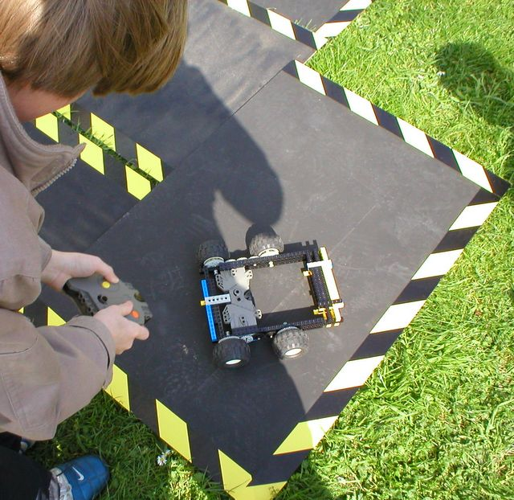

First |
Previous Picture |
Next Picture |
Last | Thumbnails
Notice how Dale strategically tried to make sure his shadow covers the IR - sun light can interfere with this and cause a robot not to respond. He is also showing off, after the troubles that the GD team had, he gets round the course quickly.
